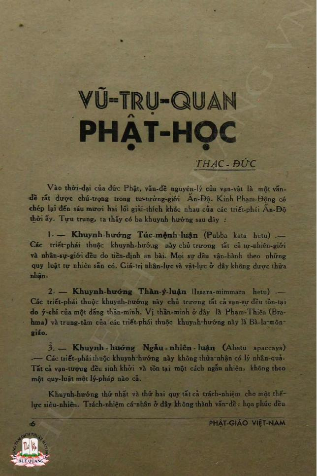

Pipeline Case Study: Phật Giáo Việt Nam OCR Journal Text¶
This case study follows tnh-scholar work on a scanned article from
Phật Giáo Việt Nam,
a monthly journal published from 1956 to 1959 by Tổng Hội Phật Giáo Việt Nam at chùa
Ấn Quang and edited by Thích Nhất Hạnh. The journal is available online as scanned
PDFs. For this walkthrough, the article was preprocessed in the TNH-scholar workspace
using Google OCR.
The pipeline turns the scan-derived article, Vũ-trụ-quan Phật học, into a readable English draft: A Buddhist Cosmological View. The aim is not to produce an authoritative translation, but to create a traceable draft that translators can check against the source image, OCR text, cleaned Vietnamese, prompt metadata, and English output.
What the pipeline demonstrates¶
This case study shows how we move from scanned historical pages to a reviewable translation draft without losing the source trail.
Each stage handles one part of that problem:
- OCR: start from imperfect machine text derived from page images.
- Line anchoring: add stable line numbers for section boundaries.
- Sectioning: divide the article by argument structure, not page or token limits.
- Extraction: isolate one reviewed section at a time.
- Cleaning: repair OCR damage without modernizing the text.
- Translation: generate an English draft with document context and provenance attached.
The pipeline makes the article more accessible while keeping each transformation visible.
Source and scholarly context¶
Article and attribution¶
The text is Vũ-trụ-quan Phật học — A Buddhist Cosmological View — signed Thạc-Đức and published in Phật Giáo Việt Nam, issue 17–18, December 1957. Thạc-Đức is associated with Trần Thạc Đức, a pen name in the Phật Giáo Việt Nam corpus; recent scholarship and the Plum Village extended biography identify it as one of Thích Nhất Hạnh's pen names.
Why this article matters¶
Phật Giáo Việt Nam was part of a 1950s Vietnamese Buddhist reform conversation. It published doctrinal essays, essays on Buddhist modernization, and early writing connected with Thích Nhất Hạnh's vision for the reform of Vietnamese Buddhism.
This article discusses causality, dependent origination, moral responsibility, and liberation. These themes appear early in the historical arc of Thích Nhất Hạnh's life and teaching, and they give us a window into understanding his later development of engaged Buddhism, peace work, and community building.
For this case study, the article is useful because it requires the system to preserve several kinds of context at once: source images, OCR damage, Buddhist terminology, historical metadata, attribution, and translation provenance.
References
Lê, Adrienne Minh-Châu. "Toward National Buddhism: Thích Nhất Hạnh on Buddhist Nationalism and Modernity in the Journal *Phật Giáo Việt Nam*, 1956–1959." *Journal of Vietnamese Studies* 19, no. 1 (February 2024): 9–48.Technical workflow¶
This section shows the source material, then walks through the commands, inputs, outputs, and review points.
Technical note: This walkthrough uses the Unix shell, shell variables, file paths,
sed, and repeated CLI commands. Browser, VS Code, and terminal UI interfaces are planned; see Future Platform Development.Source files live at
tests/golden/journal-pipeline/. Commands are run from the repo root.tnh-gendiscovers prompts from./tnh-prompts/by default; use--prompt-dir PATHonly to override that.
The scanned pages¶
The article comes from four scanned journal pages. The two below bookend the article and show the source material. They are part of the review chain: translators can compare the OCR, cleaned Vietnamese, and generated English against the page images.

Page 7 of the scan: article title, byline, and the opening argument.
The running footer PHẬT-GIÁO VIỆT-NAM is visible at the bottom — one of the
artifacts the clean stage must remove. (View with OCR region annotations)
{kind=link}
Page 10: the article's closing argument on temporal causality, continuity of existence,
and liberation. The footer PHẬT GIÁO VIỆT NAM and a page-number artifact appear near
the bottom. (View with OCR region annotations)
{kind=link}
Source and attribution note¶
The digitized journal is hosted by Thư Viện Hoa Sen, which credits Thư Viện Huệ Quang for digitizing the rare materials. The Hoa Sen page is the source used for this project.
- Collection page: https://thuvienhoasen.org/a26248/tap-chi-phat-giao-viet-nam
- Direct PDF: https://thuvienhoasen.org/images/file/4Vp0iwbv0wgQAJAY/phat-giao-viet-nam-1956-17-18.pdf
- Hoa Vô Ưu mirror/reference: https://hoavouu.com/a24580/nguyet-san-phat-giao-viet-nam-1956
- Tài Liệu Phật Học catalog record (item 33): https://tailieuphathoc.com/tai-lieu/nguyet-san-phat-giao-viet-nam-do-tong-hoi-phat-giao-viet-nam-xuat-ban-dat-tai-chua-an-quang-tu-nam-1956-1959-1892?viewpdf=2325
The dates are worth preserving as metadata. Some library URLs label the collection 1956;
catalog entries for the same issue record 1957. The pipeline can preserve this kind of
source ambiguity.
What the raw OCR looks like¶
When the scan comes out of the OCR process, it looks like this:
VŨ-TRỤ-QUAN
PHAT-HOC ← title diacritics dropped
THẠC - ĐỨC
...
1.―
1- ← duplicate section marker
Khuynh hướng Túc mệnh-luận (Pubba kata hetu)
...
họa phúc đều
PHẬT GIÁO VIỆT NAM ← running journal footer landed mid-paragraph
...
thấu suốt quá khứ vị lai hiện-
THẢI CHO MỌT NẤU ← page footer artifact (page 10)
The text is mostly intact, but not reliable enough for translation. Broken lines obscure
syntax; dropped diacritics change Vietnamese words; running headers and page artifacts
interrupt paragraphs; Buddhist terms need to survive cleanup without being silently
modernized. This is the kind of document tnh-gen is meant to handle.
Pipeline overview¶
PDF scan
↓ OCR
raw OCR text
↓ tnh-lines number
numbered source
↓ tnh-gen default_section
sections_gpt54.json
↓ extract section
section raw text
↓ tnh-gen default_clean
cleaned Vietnamese
↓ tnh-gen translate_journal_section_en
English draft translation + provenance
Each step is small enough to inspect. OCR text becomes numbered text; numbered text becomes a section map; a reviewed section becomes cleaned Vietnamese; the cleaned section becomes a draft translation with provenance.
Technical Note: the extract step is currently a plain
sedcall; there is no dedicated subcommand yet. The model calls are automated; the review points are human.
What's needed¶
Two CLI tools from the repo:
tnh-lines— adds or removes line numbers from a text filetnh-gen— runs a prompt against a file and writes the result
All commands run from the repo root. Prompts come from the default local prompt workspace:
These shell variables are used throughout:
SOURCE_FILE=tests/golden/journal-pipeline/source.txt
WORK_DIR=tests/golden/journal-pipeline/walkthrough/clean_translate
mkdir -p "$WORK_DIR"
METADATA='title: Vũ-trụ-quan Phật học
author: Thạc-Đức
possible_author: Trần Thạc Đức / Thích Nhất Hạnh attribution uncertain
journal: Phật Giáo Việt Nam
issue: 17-18
year: 1957
digitization_credit: Thư Viện Huệ Quang
source_page: https://thuvienhoasen.org/a26248/tap-chi-phat-giao-viet-nam
source_pdf: https://thuvienhoasen.org/images/file/4Vp0iwbv0wgQAJAY/phat-giao-viet-nam-1956-17-18.pdf
source_mirror: https://hoavouu.com/a24580/nguyet-san-phat-giao-viet-nam-1956
catalog_record: https://tailieuphathoc.com/tai-lieu/nguyet-san-phat-giao-viet-nam-do-tong-hoi-phat-giao-viet-nam-xuat-ban-dat-tai-chua-an-quang-tu-nam-1956-1959-1892?viewpdf=2325'
This metadata travels into prompt calls and generated artifact provenance. Uncertain fields
such as possible_author and conflicting date labels stay explicit.
Stage 1: Number the lines¶
Input: $SOURCE_FILE — raw OCR text, approximately 146 lines
Output: "$WORK_DIR/source_numbered_walkthrough.txt" — same text with N: line prefix
The sectioning prompt needs numbered input to anchor its section boundaries. We add line numbers to the source first:
The output is plain text with N:LINE formatting. The OCR text is unchanged; line numbers
only anchor section boundaries.
1:VŨ-TRỤ-QUAN
2:PHAT-HOC
3:THẠC - ĐỨC
4:Vào thời đại của đức Phật, vấn đề nguyên lý của vạn vật là một vấn-
5:đề rất được chú trọng trong tư tưởng-giới Ấn Độ. Kinh Phạm-Động có
Stage 2: Section the article¶
Input: "$WORK_DIR/source_numbered_walkthrough.txt"
Output: "$WORK_DIR/sections_gpt54.json" — section map, titles, summaries, and document-level metadata
default_section reads the numbered source and divides it into logical sections. It also
generates a summary, key concepts, and section titles that travel forward into later stages.
tnh-gen run \
--prompt default_section \
--input-file "$WORK_DIR/source_numbered_walkthrough.txt" \
--var source_language=Vietnamese \
--var target_section_count=4 \
--var target_lines_per_section=36 \
--var document_metadata="$METADATA" \
--output-file "$WORK_DIR/sections_gpt54.json"
The output is a JSON file. Here is what it finds in this article:
| Section | Lines | Title |
|---|---|---|
| 1 | 1–48 | Introduction and critique of three Indian philosophical tendencies |
| 2 | 49–93 | Dependent origination as the Buddhist worldview |
| 3 | 94–124 | Simultaneous causality: world as relation of subject and object |
| 4 | 125–146 | Sequential causality, continuity of life, and the broader meaning of causality |
The JSON also includes document-level context: summary, key concepts, metadata, and notes on the structure of the argument. This context gets passed into translation.
Review point: We inspect
sections_gpt54.jsonbefore proceeding. If a boundary breaks an argument or merges distinct claims, edit the JSON here. Sectioning is the most consequential review point.
Stage 3: Extract a section¶
Input: "$WORK_DIR/source_numbered_walkthrough.txt" and section boundaries from sections_gpt54.json
Output: "$WORK_DIR/section_01_raw.txt" — unnumbered OCR text for section 1
Using start_line and end_line from the JSON, extract section 1 from the numbered source:
sed -n '1,48p' \
"$WORK_DIR/source_numbered_walkthrough.txt" \
> "$WORK_DIR/section_01_numbered.txt"
Then we strip the line numbers:
This produces the raw OCR text for section 1.
Stage 4: Clean the OCR text¶
Input: "$WORK_DIR/section_01_raw.txt" — raw OCR with diacritics damage and footer artifacts
Output: "$WORK_DIR/section_01_cleaned.txt" — corrected Vietnamese prose
default_clean corrects OCR damage while staying close to the original. It removes stray
footer lines, restores dropped diacritics, and rejoins lines split across page boundaries
without rewriting the text or modernizing the prose.
tnh-gen run \
--prompt default_clean \
--input-file "$WORK_DIR/section_01_raw.txt" \
--vars "$WORK_DIR/clean_vars.json" \
--output-file "$WORK_DIR/section_01_cleaned.txt"
Before cleaning, section 1 opens like this:
After cleaning:
VŨ-TRỤ-QUAN
PHẬT-HỌC
THẠC-ĐỨC
Vào thời đại của đức Phật, vấn đề nguyên lý của vạn vật là một vấn đề rất
được chú trọng trong tư tưởng giới Ấn Độ. Kinh Phạm-Động có chép lại đến
sáu mươi hai lối giải thích khác nhau của các triết-phái Ấn-Độ thời ấy.
Tựu trung, ta thấy có ba khuynh hướng sau đây:
1. — Khuynh hướng Túc mệnh-luận (Pubba kata hetu)
Title diacritics are restored. The duplicate section marker is collapsed. Lines are rejoined into prose. The page footer intrusion is gone.
Review point: Before translating, we compare the cleaned Vietnamese against the scanned page image. This is where OCR mistakes or silent normalization become visible.
Stage 5: Translate the section¶
Input: "$WORK_DIR/section_01_cleaned.txt" and "$WORK_DIR/section_01_journal_translate_vars.json"
Output: "$WORK_DIR/section_01_translated_journal_en.txt" — English draft with YAML provenance header
translate_journal_section_en translates a cleaned section into English using the section
summary, key concepts, source metadata, attribution note, and section structure. This helps
keep terminology consistent across sections and keeps the draft tied to the source.
tnh-gen run \
--prompt translate_journal_section_en \
--input-file "$WORK_DIR/section_01_cleaned.txt" \
--vars "$WORK_DIR/section_01_journal_translate_vars.json" \
--output-file "$WORK_DIR/section_01_translated_journal_en.txt"
The vars file carries the section context from sections_gpt54.json forward into this call.
See Using a vars file below.
Here is the opening of the translation:
Introduction and a Critique of Three Indian Philosophical Tendencies
Buddhist Cosmology
Thac-Duc
In the age of the Buddha, the question of the fundamental principle of all things was one to which the intellectual world of India gave great attention. The Brahmajala Sutta records as many as sixty-two different explanations advanced by the Indian philosophical schools of that time. In general, however, we may discern the following three tendencies:
- The tendency of fatalism (pubba-kata-hetu)
The philosophical schools belonging to this tendency maintained that the entire natural world and human world are arranged by predestination. Everything proceeds according to pre-existent natural laws. The value of human effort and material agency is not acknowledged here.
And here is the closing of the fourth and final section:
In sum, the Buddhist conception of causality, in the narrow sense, is simply the Law of Causality (Loi de Causalité); but in the broad sense, it is not confined to causal relations of a purely theoretical nature. The Buddhist conception of causality also encompasses moral and liberative relations; in breadth it extends throughout the ten directions, and in length it penetrates past, future, and present.
Review point: We review terminology, doctrinal vocabulary, citations, and any place where the model resolved an ambiguity. The translation inherits attribution uncertainty; it does not resolve it.
Optional comparison run: a different translation prompt¶
A prompt can change without changing the file workflow. The same cleaned section and vars file can run through a second prompt and produce a second provenance-tracked artifact.
For this case study, a comparison prompt is included:
translate_journal_section_en- baseline journal-translation prompt
translate_journal_section_tnh_voice_en- alternate prompt aimed at a gentler English voice associated with later published Thích Nhất Hạnh prose
The second run uses the same cleaned section and vars file, but writes to a different output path:
tnh-gen run \
--prompt translate_journal_section_tnh_voice_en \
--input-file "$WORK_DIR/section_01_cleaned.txt" \
--vars "$WORK_DIR/section_01_journal_translate_vars.json" \
--output-file "$WORK_DIR/section_01_translated_tnh_voice_en.txt"
Here is the opening paragraph of section 1 across all three forms:
| Vietnamese | Baseline English | TNH-voice English |
|---|---|---|
| Vào thời đại của đức Phật, vấn đề nguyên lý của vạn vật là một vấn-đề rất được chú trọng trong tư tưởng-giới Ấn Độ. | In the age of the Buddha, the question of the fundamental principle of all things was one to which the intellectual world of India gave great attention. | In the time of the Buddha, the question of the first principle of all things held a very important place in the intellectual life of India. |
| Kinh Phạm-Động có chép lại đến sáu mươi hai lối giải thích khác nhau của các triết-phái Ấn-Độ thời ấy. | The Brahmajala Sutta records as many as sixty-two different explanations advanced by the Indian philosophical schools of that time. | The Brahmajāla Sutta records as many as sixty-two different explanations offered by the Indian philosophical schools of that age. |
| Tựu trung, ta thấy có ba khuynh hướng sau đây: | In general, however, we may discern the following three tendencies: | Broadly speaking, we can see three principal tendencies: |
This is a useful review pattern when prompt tuning is part of the work: the prompt itself becomes a clear part of the provenance chain.
Sample translation artifacts
- [section_01_translated_journal_en.txt](assets/journal-pipeline/section_01_translated_journal_en.txt) - [section_01_translated_tnh_voice_en.txt](assets/journal-pipeline/section_01_translated_tnh_voice_en.txt) - [section_04_translated_journal_en.txt](assets/journal-pipeline/section_04_translated_journal_en.txt) - [section_04_translated_tnh_voice_en.txt](assets/journal-pipeline/section_04_translated_tnh_voice_en.txt)Stage 6: Repeat for remaining sections¶
We repeat the same clean → translate pattern for sections 2, 3, and 4. Each section gets its own cleaned file, translated file, and context vars file.
When all four sections are done:
cat \
"$WORK_DIR/section_01_translated_journal_en.txt" \
"$WORK_DIR/section_02_translated_journal_en.txt" \
"$WORK_DIR/section_03_translated_journal_en.txt" \
"$WORK_DIR/section_04_translated_journal_en.txt" \
> "$WORK_DIR/final_translated.txt"
Full pipeline output: The complete four-section translation — assembled from the
.txtartifacts produced by this pipeline and converted to a formatted.mddocument by Claude Code as part of this case study's drafting and workflow production — is at Vũ-trụ-quan Phật học: A Buddhist Cosmological View (baseline prompt). A parallel version using the TNH-voice prompt for sections I and IV is at Vũ-trụ-quan Phật học: A Buddhist Cosmological View (TNH-voice). The.mdconversion was part of the case study workflow: Codex AI helped build the golden artifact infrastructure, and Claude Code helped draft and test this walkthrough against that infrastructure.
Additional workflow notes¶
Terminal output and provenance¶
While a model call is running, the terminal is quiet. On success:
- the result prints to
stdout - if
--output-filewas used, a confirmation appears onstderr:Wrote output to <path>
On failure, an error message and a trace ID appear. The trace ID is useful for reporting problems.
Plain-text outputs get an embedded YAML provenance header with model name, prompt version,
timestamp, and fingerprint. Structured JSON outputs stay as raw JSON and receive a separate
.provenance.yaml sidecar. For historical materials, provenance also carries source
metadata, attribution uncertainty, and prompt context. Provenance makes artifacts
inspectable and reproducible; it does not make them authoritative.
Using a vars file¶
The --vars flag loads a JSON file as a batch of variables. For translation, the
section-specific vars file carries document context and source attribution forward:
{
"source_language": "Vietnamese",
"target_language": "English",
"section_title": "Bối cảnh tư tưởng Ấn Độ và lập trường phê bình của Phật giáo",
"document_summary": "...",
"section_summary": "...",
"document_key_concepts": "Vũ-trụ-quan Phật học; Nhân duyên; Duyên khởi; ...",
"document_metadata": "title: Vũ-trụ-quan Phật học\nauthor: Thạc-Đức\njournal: Phật Giáo Việt Nam\nissue: 17-18\nyear: 1957"
}
This is built from the sectioning JSON by pulling out the relevant section and document
fields. Individual --var key=value flags can supplement or override it. In the checked-in
artifact set, this file is section_01_journal_translate_vars.json.
Artifact layout¶
The checked-in walkthrough artifact directory looks like this:
tests/golden/journal-pipeline/walkthrough/clean_translate/
├── source_numbered_walkthrough.txt
├── sections_gpt54.json
├── sections_gpt54.json.provenance.yaml
├── section_01_numbered.txt
├── section_01_raw.txt
├── section_01_cleaned.txt
├── section_01_journal_translate_vars.json
├── section_01_translated_journal_en.txt
├── section_01_translated_tnh_voice_en.txt
├── section_02_raw.txt ← (and numbered, cleaned, vars, translated)
├── section_03_raw.txt
├── section_04_raw.txt
├── section_04_cleaned.txt
├── section_04_translated_journal_en.txt
├── section_04_translated_tnh_voice_en.txt
└── clean_vars.json
These files are checked in as golden artifacts for test comparison and prompt refinement.
An assembled final_translated.txt can be produced locally, but it is not the checked-in
artifact of record. The checked-in set shows the intended posture: every generated result
remains connected to the page image, source text, intermediate transformations, prompt
context, and provenance that produced it.
Future Platform Development¶
Currently, the workflow is run from the command line. That makes every step visible and easy to inspect, but it also requires comfort with Unix shell commands, JSON, file paths, and manual file handling. Future versions should make the same work easier to do while keeping the same files, prompts, source links, and provenance records underneath.
Planned directions:
-
VS Code extension — the nearest-term direction. A panel could let a user open a source file, run sectioning, review and adjust the section map, then step through cleaning and translation without leaving the editor. The same files would still be written and preserved for review.
-
TUI (terminal user interface) — for users who prefer the terminal but want a guided view of the workflow: artifact previews, section selection, and prompt output shown in place.
-
Web interface — a longer-term direction for collaborative or institutionally hosted work: shared document queues, version tracking, and annotation.
The important pieces would stay the same: prompts, vars files, provenance records, source images, cleaned text, translation drafts, and structured sections.